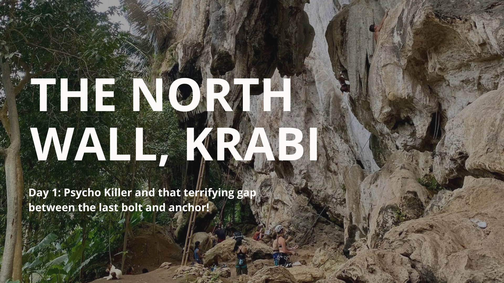
The North Wall, Ao Nang, Krabi, Thailand
Introducing ByrdieOnTheRocks and My Climbing Journey
Hey guys, thanks for stopping by my climbing blog and reading my first-ever blog post! First of all, let me introduce myself.
My name is Byrdie, and I go by byrdieontherock. I’m a tech marketer, and I first started climbing back in 2022 at a gym in Bangkok.
The rest is history—I’ve been climbing almost every weekend since! My first outdoor climbing experience was in Krabi in 2023, and gosh,
I enjoyed it so much. I was only top-roping at the time, but I didn’t think I could progress to lead climbing. Well, I proved myself wrong!
By the end of 2023, my climbing buddy Pie was talking about learning lead climbing indoors, but then she saw a flyer in our gym.
It was for learning outdoor lead climbing—and that’s when my outdoor trips started happening more often.
But hey, this blog is about my climbing experience in Krabi, right? LOL, I think I’ll make a post about that crazy experience in the future!
Just a quick background on my blog: This year, I also got into website development, so
I created this site to practice and experiment with my coding knowledge. This blog is where I share my personal climbing experiences, not professional advice—I'm definitely not an expert! Please remember to always do your own research and prioritize safety when climbing.
Alrighty, enough with the intro and disclaimers—let’s get to the real stuff: climbing!
The North Wall: Another Great Climbing Spot Beyond Railay
Krabi, Krabi, Krabi... wow! I’ve been looking forward to this trip for so long. As many of you know, Krabi is a beautiful city in the south of Thailand,
known for its stunning beaches and islands. But for us climbers, Krabi is a paradise. Many climbers are familiar with
Railay Beach
, a beach surrounded by limestone cliffs.
But did you know that Krabi also has another well-known climbing spot called “The North Wall”? Located in
Ao Nang
on Krabi mainland, it’s easily accessible—unlike Railay, which requires a short 10-minute boat ride.
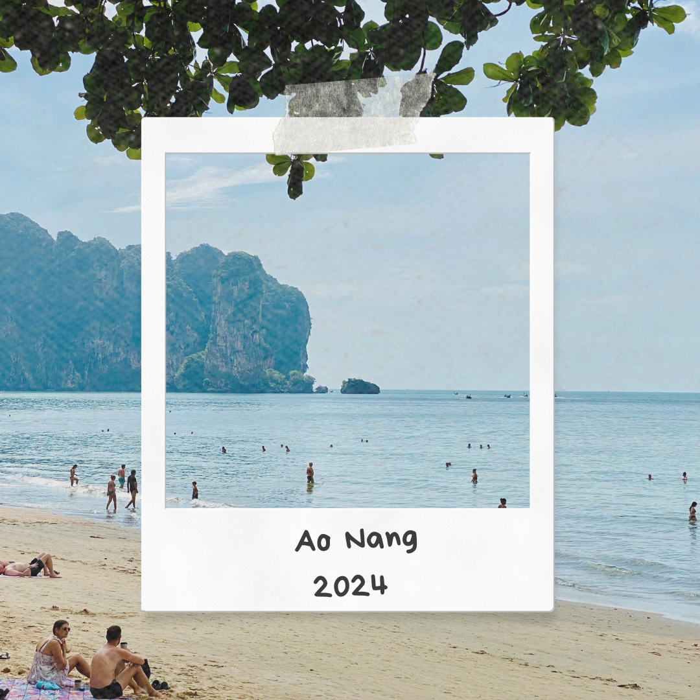
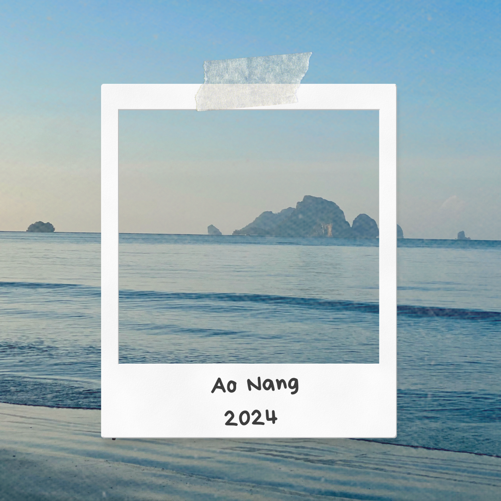
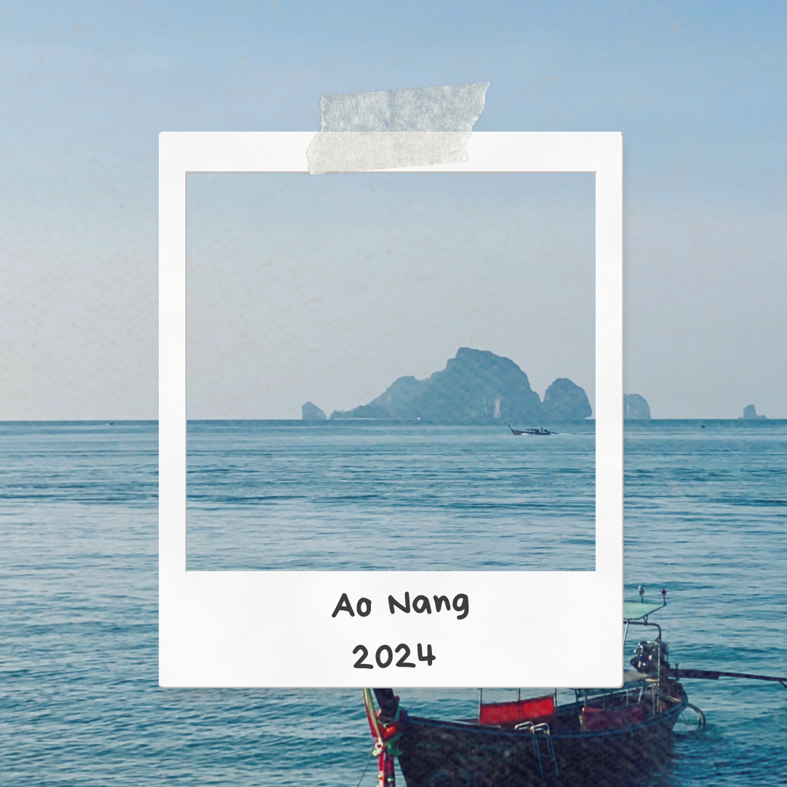
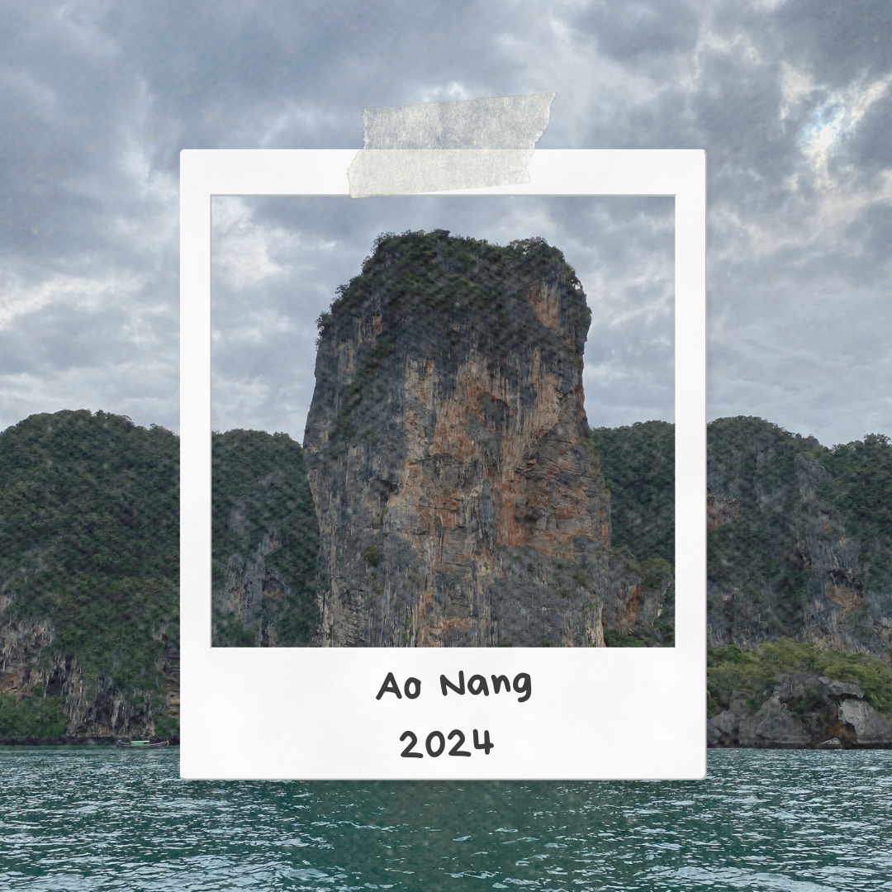
The Excitement Builds: Preparing for My First Day at The North Wall
What makes this trip special? Well, I went to both crags—Railay and the North Wall! Whoa! This post will focus on my first day climbing at the North Wall.
December 7, 2024 couldn’t come soon enough. I booked my flight super early—like, 6:30 AM. So, I had to wake up at 3 AM since I live in the center of Bangkok.
I caught the early flight with my climbing buddy, P’Bell. You’ll see her in some of my future posts. Pie, another partner-in-climb, also joined us on this awesome trip!
Arriving at The North Wall: A Beautiful but Intimidating Climbing Spot
Fast forward to the afternoon after we checked into our hotel in Ao Nang, just a 15-minute walk to The North Wall. Let me tell you,
the North Wall
is beautiful but intimidating. I believe there are only a few 5-grade routes available, which was limiting for me because
the hardest grade I can do outdoors right now is probably 5c. Beyond that, I might have to leave my quickdraws behind—haha, not my style!
But man, the rock there is just gorgeous. There are so many overhang routes, though I’m not quite at that level yet. I’m not going to dive into the details
about the type of rock here because, as I said, I’m just an amateur, but trust me, it’s stunning! Check out the pictures I’ve shared in this post.
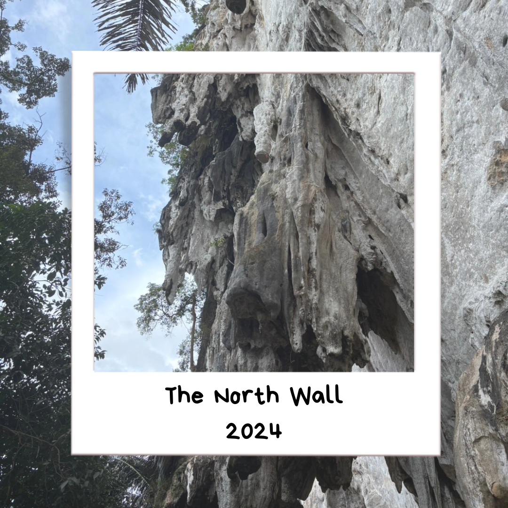
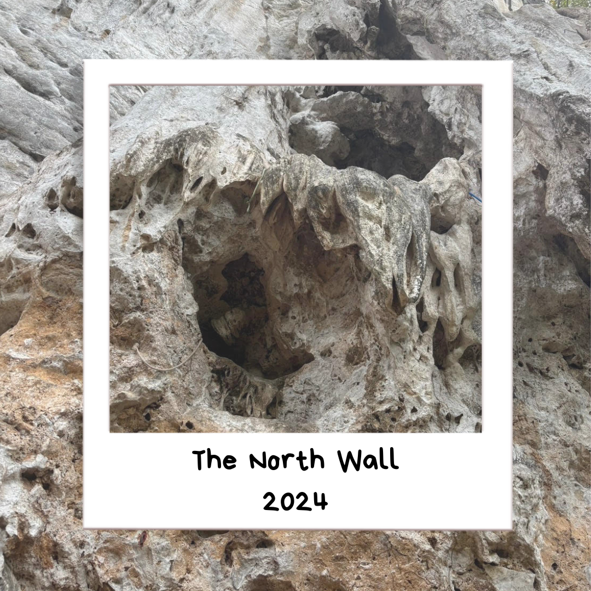
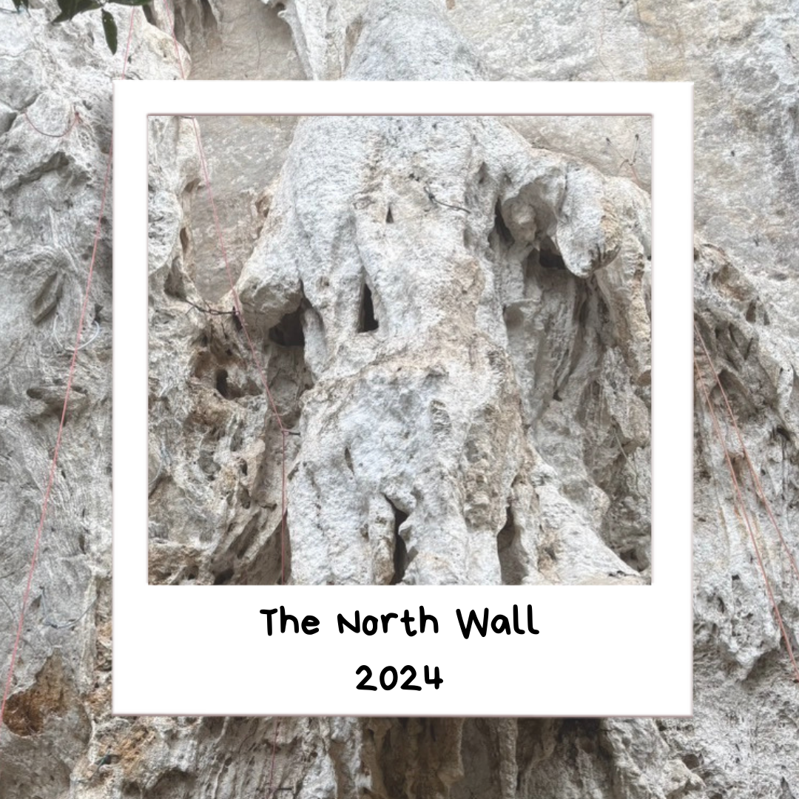
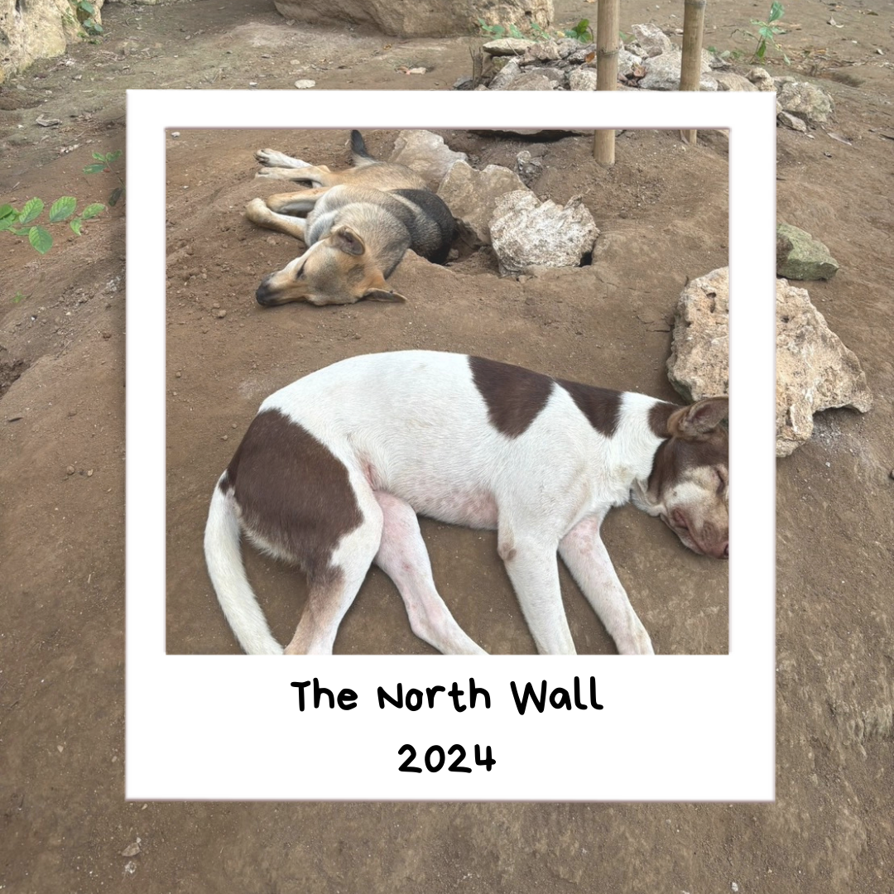
Facing "Psycho Killer" at The North Wall: Overcoming the First Attempt
When we arrived, there were a lot of climbers, but most of them seemed to be tackling harder grades. Luckily for us,
the route “Psycho Killer” (5c) at the Rock n’ Roll Wall was available. For route details, you can check out the Crag link: Psycho Killer on The Crag
Even though this route is only 5c, it was still intimidating because it was in a new location, and I had never climbed here before.
The anticipation was high. Ok, Birdie, you need to calm down. You’ve got this! I looked at P’Bell and asked, “Are you ready?” with an anxious smile.
Well, we’re here now, so here goes. I geared up, clipped my first bolt, and okay, this feels good. The second I got above the clipped quickdraw,
I started shaking real bad. This happens to me often—if you’ve never belayed me, you might wonder what the heck is going on!
I clipped the second and third bolts, and that’s when it got a little overwhelming. I hadn’t slept well the night before because of my excitement,
and I called P’Bell for some tension, telling her I needed to come down and get myself together.
Got Through 'Psycho Killer' After a Nerve-Wracking Climb!
My strategy for the next attempt was to climb slowly, carefully finding the best footholds and handholds. And guess what? It worked!
I kept calm, took my time, and focused on my feet and hand placement. The last bolt before the anchor was scary—so far apart and a bit overhung.
Maybe that’s how it got its name, “Psycho Killer.” But I did it! I finished the route, despite my hands and legs shaking 26 meters up!
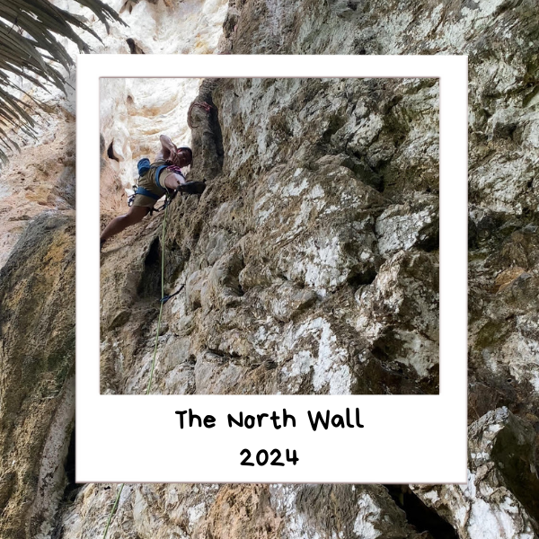
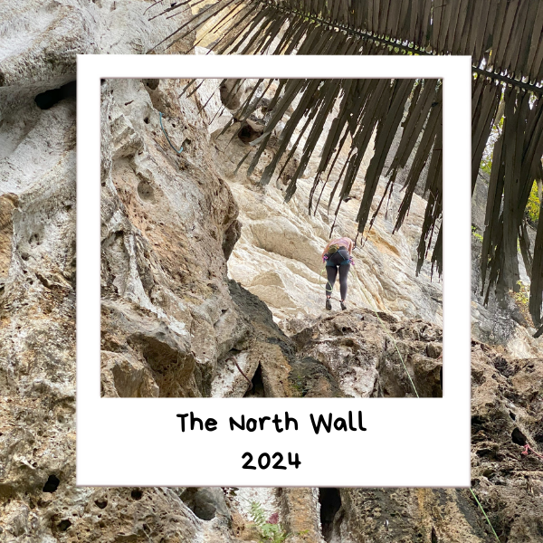
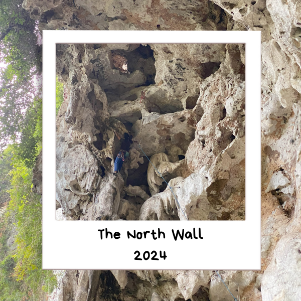
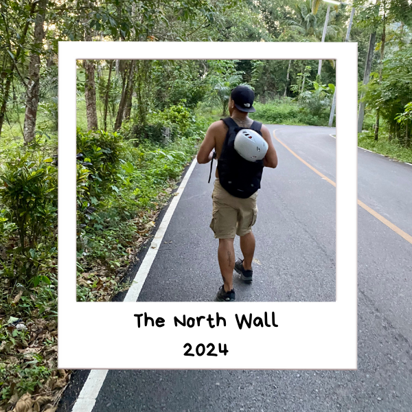
Triumph, Fear, and the Adrenaline Rush
At the top of 'Psycho Killer,' I saw Pie on the ground, ready to top-rope this beast. If I’m not mistaken, Pie had climbed this route twice before completing it. I know, I know—we weren't aiming to send or onsight this route, haha, but we just took our time, finishing the climb without leaving any gear behind. Fortunately, we didn’t have to, haha.
There’s something incredibly special about finishing a climb that scares you. It's intense, yet somehow, it makes you feel ecstatic. Is this what they call an adrenaline rush? I can’t fully express the feeling in words. It was simply amazing, and to top it off, being surrounded by like-minded people in one of the most beautiful places in the world made it all worth it.
Lessons Learned and Memories Made
We spent around three hours—if I’m not mistaken—climbing 'Psycho Killer,' and I think that was enough for today. It started getting dark, and we were probably attracting flies and mosquitoes with all the sweat, so I recommend bringing bug and mosquito spray if you ever plan to climb at The North Wall. Trust me, it could make all the difference!
Reflecting on My Journey
That’s a wrap for Day 1 of my five-day climbing trip in Krabi. I hope you enjoyed reading my first blog! To be honest, when I was in college, I hated writing. All those essays felt like a painful chore. But with this blog, it’s different. I actually enjoy writing it! Could sharing my experiences through words be something I truly enjoy now? Anyway, stay tuned for Day 2 at The North Wall in my five-part blog series. Until then, thank you for reading!
Until then, thank you for reading!
ByrdieOnTheRocks